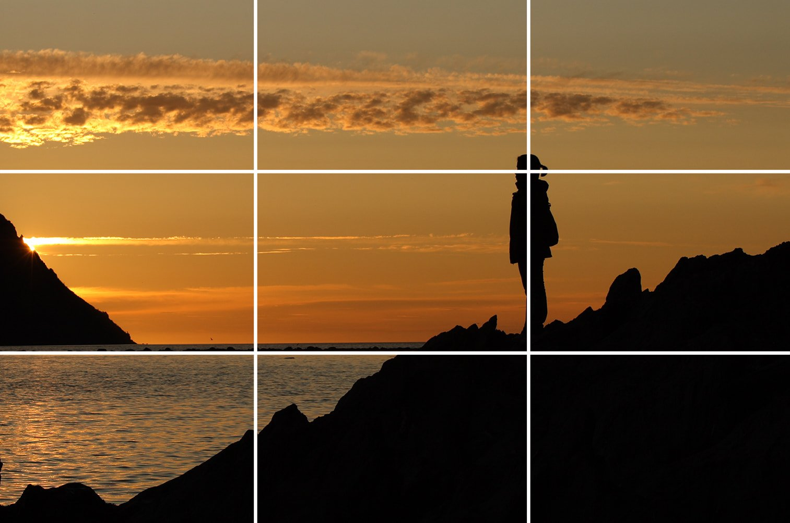
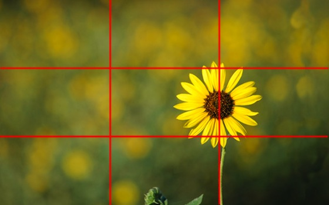
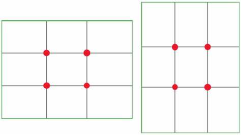

La Regla de los Tercios
La Regla de los Tercios es una de las reglas más básicas de composición fotográfica. Quien más y quien menos la ha oído mencionar alguna vez, aunque es posible que no tengas claro del todo lo que significa. En las siguientes líneas te explicamos en qué consiste la regla de los tercios, y como aplicarla para mejorar drásticamente tus composiciones fotográficas. Tus fotos nunca volverán a ser iguales una vez entiendas qué es y cómo funciona. ¿Te animas?

La Famosa Regla de los Tercios
La regla de los tercios es una de las reglas de composición más famosas dentro del mundo de la fotografía. Es uno de los primeros recursos compositivos que uno descubre y probablemente sea de los primeros en aprenderse tanto por su sencillez como por lo efectivo que es en sus resultados.
Con la regla de los tercios conseguirás dotar a tus fotografías de una sensación de profundidad y lograrás que se aprecie un mayor equilibrio, guiando al ojo del espectador directamente al punto de mayor interés.

¿En Qué Consiste Exactamente la Regla de los Tercios?
Mira una de tus fotografías y mentalmente divídela en tres tercios imaginarios, tanto horizontales como verticales. La imagen te quedará dividida en 9 partes iguales, y los cuatro puntos de intersección de esas líneas son los que van a fijar los puntos adecuados para situar el centro, o centros, de interés de nuestra foto. De esa forma estaremos rompiendo con la común costumbre de situar a nuestro sujeto o elemento protagonista justo en el centro del encuadre

Cada uno de estos cuatro puntos de intersección se denominan puntos fuertes. Cuando estemos haciendo una foto, si solo existe un único punto de interés, es preferible situarlo en uno de los cuatro puntos de intersección mencionados en lugar de hacerlo directamente en el centro de la foto. Esto suele generar mayor atracción en el espectador que cuando el centro de interés esta en el mismo centro de la fotografía